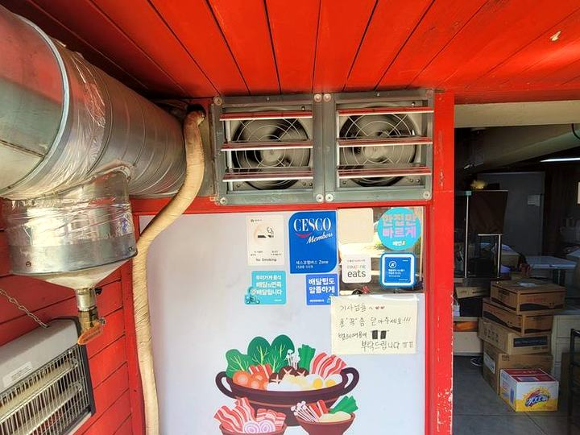
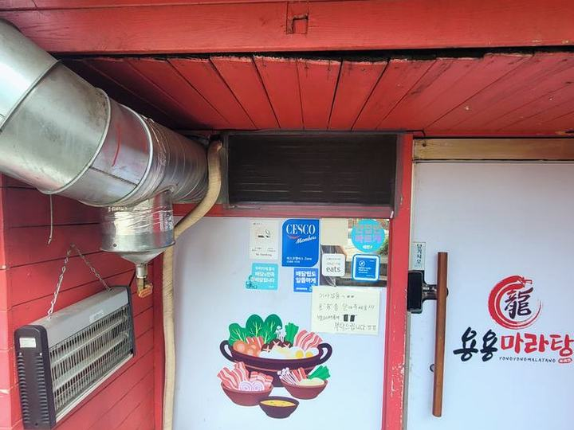
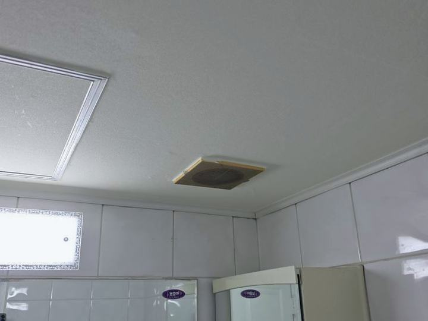
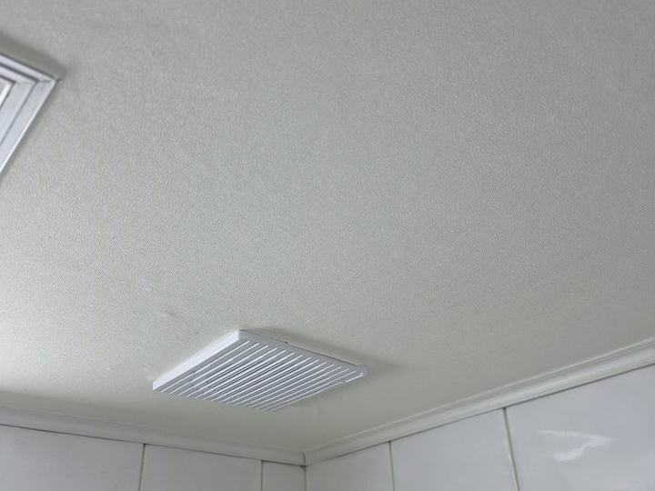

부평구 창문형 환풍기 설치
부평동·산곡동·십정동·부평시장 방문 시공
부평구은 부평시장 일대 상가와 노후 아파트가 밀집해 있습니다. 새 환풍기로 바꿔도 바람이 안 빠지는 경우가 특히 많아, 현장을 직접 보고 방식을 정한 뒤 시공합니다.

- 주요 방문 권역
- 부평동·산곡동·십정동·부평시장
- 대표 시공 현장
- 시장 상가 · 음식점 · 노후 아파트
- 상담 · 예약
- 010-2680-4538 (08:00~20:00)
부평구에서 자주 하는 시공
부평시장 일대 상가와 노후 아파트가 밀집해 있습니다. 그래서 부평구에서는 새 환풍기로 바꿔도 바람이 안 빠지는 경우로 연락을 주시는 경우가 가장 많습니다.
노후 아파트는 공용 배기구가 막혀 있는 경우가 있어, 교체 전에 배기 통로가 살아 있는지 먼저 확인합니다.
같은 창문형 환풍기라도 건물마다 맞는 방식이 다릅니다. 부평구에서 실제로 해 본 현장을 기준으로, 무리한 타공 없이 되는 방법부터 먼저 찾습니다.
부평구에서 진행한 시공 전 · 후

시공 전마라탕 매장 루버 환풍기 2대 시공
시공 전향신료 냄새가 강한 업종인데 배기가 덕트 하나뿐이라 냄새가 홀까지 넘어오던 상태입니다.
시공 후기존 덕트를 피해 벽면에 루버형 환풍기 2대를 추가했습니다. 배출량이 크게 늘었습니다.

시공 전
시공 후천장 매립형 환풍기 교체
시공 전천장에 매립된 사각 환풍기가 소리만 크고 바람이 거의 나오지 않던 상태입니다.
시공 후천장을 뜯지 않고 같은 규격 신제품으로 교체했습니다. 그릴이 새것이라 마감도 깔끔해졌습니다.
부평구 최근 시공 기록
부평시장 상가 음식점 배기
영업 시작이 일러 새벽에 작업했습니다.
산곡동 노후 아파트 욕실 환풍기
공용 배기구가 막혀 있어 먼저 통로를 확인했습니다.
십정동 다세대 주방 환풍기 교체
기름때로 굳은 제품을 철거하고 교체했습니다.
부평구 시공 전 확인하는 것
부평구 시공 진행 순서
사진 상담
부평구 현장 사진과 창·벽 크기를 문자로 보내주시면 대략적인 방식과 비용을 먼저 알려드립니다.
방문 확인
부평동·산곡동·십정동·부평시장 일대는 방문 확인이 빠른 편입니다. 벽체와 전기 상태를 직접 보고 제품을 정합니다.
시공
기존 제품 철거부터 타공, 고정, 마감까지 하루 안에 끝내는 것을 원칙으로 합니다.
작동 확인·정리
바람 방향과 소음을 함께 확인하고, 작업 중 나온 분진과 자재를 정리한 뒤 마무리합니다.
부평구 자주 묻는 질문
오래된 아파트인데 환풍기를 바꿔도 효과가 있을까요?
통로가 살아 있다면 확실히 좋아집니다. 다만 공용 배기구가 막혀 있으면 새 제품을 달아도 소용이 없으므로, 방문 시 통로 상태를 먼저 확인하고 말씀드립니다.
부평구에서 창문형 환풍기 설치 비용은 어느 정도인가요?
제품 크기와 시공 방식(창문형·벽 타공·판넬)에 따라 달라집니다. 현장 사진과 대략적인 크기를 보내주시면 방문 전에 범위를 알려드립니다.
부평구 시공 때 특별히 신경 쓰는 부분이 있나요?
노후 아파트는 공용 배기구가 막혀 있는 경우가 있어, 교체 전에 배기 통로가 살아 있는지 먼저 확인합니다.
주말이나 공휴일에도 시공이 되나요?
됩니다. 평일·주말 08:00~20:00 상담을 받고 있고 주말 시공도 진행합니다. 다만 주말은 일정이 먼저 차는 편이라 미리 연락 주시면 부평구 방문 일정을 잡기 수월합니다.
부평구 창문형 환풍기 설치, 사진 한 장이면 됩니다
창이나 벽 사진과 대략적인 크기를 문자로 보내주시면 방문 전에 방식과 비용을 알려드립니다.